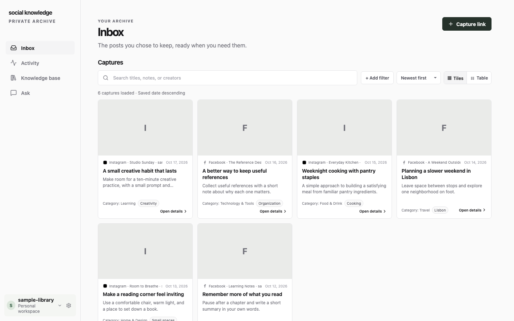
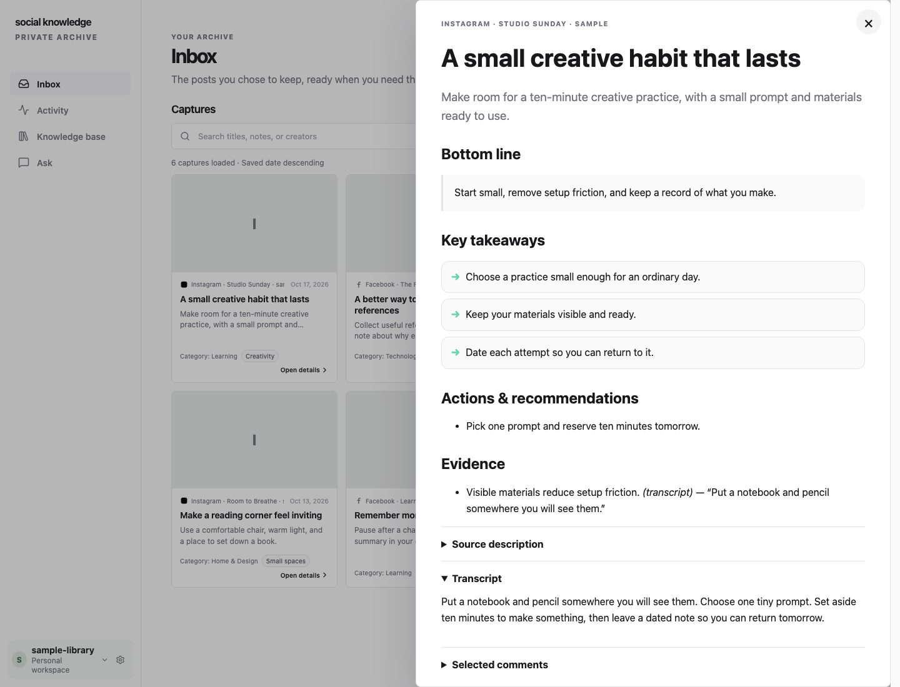
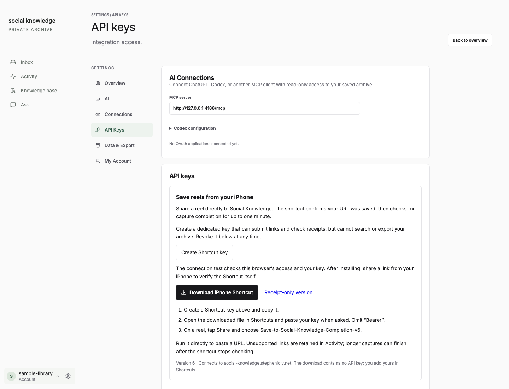

Waiting for a share…
·Original ↗
Key takeaways
For everything you meant to come back to
Social Knowledge turns the Instagram and Facebook videos you share into a private library you can search, read and actually use — with the creator and original link always attached.
How it works
Tap Share on a post and pick Social Knowledge.
Or paste a link in your browser.
The video is pulled apart into things you can read.
Translated from Korean · original kept
Search the way you remember it. Or just ask.
The actual app
Every save gets the same careful treatment, whatever it’s about: a readable write-up, the words from the video, and a link back to the creator.

Then Ask a question across everything you’ve saved. Answers cite the saves they came from.

Optional demo
Nine invented saves. Type the way you’d remember them. This little demo runs right here on the page, and nothing is sent anywhere.
Privacy & sources
Take it with you
Download the whole library whenever you like — notes, transcripts and media — with notes in a format that opens in Obsidian.
You can also let a compatible AI assistant read your library, read-only.
Get started
Social Knowledge is self-hosted today. You run it on a computer or server you control and connect your own AI provider. There’s no hosted sign-up yet.
git clone https://github.com/stephenjoly/social-knowledge.git
cd social-knowledge
cp .env.example .env
mkdir -p data vault mediaIn .env, set API_TOKEN to a long random value, set DATA_DIR=/data, VAULT_DIR=/vault and MEDIA_DIR=/media, and set APP_URL=http://localhost:8787 for this first local start. Change APP_URL to your real HTTPS address when you open access to other devices. Never commit this file.
docker compose up --build -dIt opens at http://localhost:8787 and listens only on this machine by default.
Create the first administrator straight away. Keep the app off the public internet until you have: the first person to register becomes the admin. Invite others later from Settings.
Onboarding asks for your provider keys. Saving videos needs OpenAI for transcription, plus OpenAI or Cerebras for analysis. Ask only needs the analysis provider. Each key is tested, then stored encrypted.
Create a capture-only key and install the Shortcut. Shortcut setup ↓
iPhone Shortcut
Share a Reel to the Social Knowledge Shortcut. It confirms the link was saved, then checks for about a minute for the finished capture.
Heads-up: this signed file currently sends links to social-knowledge.stephenjoly.net. Running your own server? Generate a copy that points at your address instead.
On a Mac, from your checkout. Replace your-server.example with your server’s HTTPS address first.
python3 scripts/build-shortcut.py --endpoint "https://your-server.example/api/v1/jobs" --output /tmp/save.shortcut
shortcuts sign --mode anyone --input /tmp/save.shortcut --output /tmp/save-signed.shortcutConnect your AI first. Without it, the link is still kept and marked so you can retry once AI is set up.

Share the post. Get the useful part back, whenever you need it.